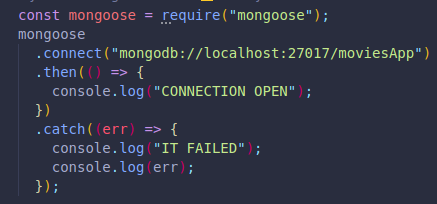
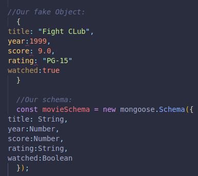
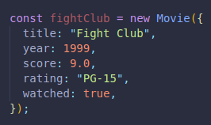

Instead of interacting with our database from the shell with MongoDB, we can use an application to connect NodeJS with MongoDB.
We can do this with Mongoose!
An ODM is an object data/document mapper and connects our app to our database.
It does so by converting the documents coming from the database into usable JavaScript objects.
An ODM like Mongoose provides ways for us to model our app data and define a schema. It helps us validate our data and build complex queries from the comfort of JavaScript.
We can add validations and filters, preset schemas to make sure our data meets the demands of that predefined schema we made.
It makes the experience better and saves us time.
For SQL databases, we use ORM's instead of ODM's.
Upon installing mongoose, we can save it and run it in our file. Here is an example of the default port and an app called movies, we added a catch for error handling, and to make sure our port is running successfully.
The model is a JavaScript class we make with Mongoose's help.
There are numerous model methods we can use for each collection and object.
We need to create a schema for our model. This is like a blueprint or map. We take our data from MongoDB and pass it to Mongoose in this schema to create an order.
We can have a data type for each key value pair, or share the same one between multiple. Here we make an object to see how it would fit into out schema.
Once we have created a schema and saved it into a variable, we can use the method .model().
It will take 2 arguments:
Example: movies --> Movie
We can now save any new instances to our database.
We can access them through the node REPL or shell, and use .save() to save them into our MongoDB database, the collection we are working with will be empty until we do this.
We can use insertMany to create multiple objects, there is no need to call .save() to push them to our database with this method, it goes directly to MongoDB!
SYNTAX --> Movie.insertMany([{},{}])
Id doing this through our JavaScript file, we must make sure to comment it out once added, as it will readd whatever we include each time we run node index.js!
We can find existing documents in our database with various methods.
find() has the same operators and syntax as in MongoDB.
If we use it in the REPL with find.({}), we will be returned a query object. Which is not the data we are looking for.
If we chain .then(data=> console.log(data)), we will be returned all the objects inside an array, even if it is only one. (We could get a single string with findOne())
We could now use.find and add any factors for our search to be more specific:
Movie.find({year:{$gt:2000},score:{$gt: 8.0}}).then((data)=>{console.log(data)})
We can do this with updateOne and updateMany().
This won't show us what was updated by default, but there are other methods we can use instead.
We can pass in an object callback function with .then() to see some data on the changes we made.
updateOne will update the first match we find, accepting an argument for the search, and the other for the updates we want to make.
We can use updateMany() to change multiple matches.
All matches will be modified to our second argument, same syntax as before.
findOneAndUpdate() will do the same as updateOne, but the pre-modified version will be returned as a visual object.
If we pass in a 3rd argument called {new: true}, which is false by default, we will be returned a visual version of the modified object!
To do this we can use remove(), which takes one argument for our search/find.
We can use other methods depending on if we want to be returned the object.
With findOneAndDelete() we will actually get the object we removed back, not just the default message..